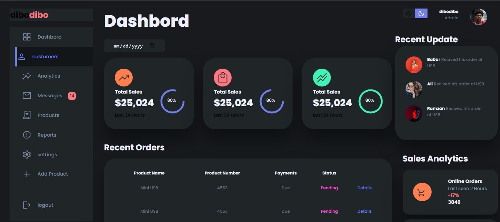

Sales Dashboard
This is a sales and analitics dashboard indicating key financial metrics of the biz.
The dashboard has a light and dark mode navigation.
Technologies:
- - HTML
- - CSS
- - Vanilla JavaScript

This is a sales and analitics dashboard indicating key financial metrics of the biz.
The dashboard has a light and dark mode navigation.